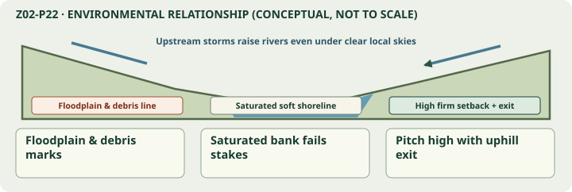

Z02-P22 · Shelter and housing · New manuscript
Evaluate shoreline, wetland and floodplain setback before pitching
Stay above rising water, wave surge, saturated soils and marsh instability near lakes, rivers and creeks.
When it applies · Camping near lakes, canoe routes, river bars, creek bends and Upper Midwest wetlands.
Equipment · Topographic map, local water-level or dam-release alerts and durable shelter kit.

Actions
- Pitch above high-water drift lines, gravel bars and floodplains—remembering upstream rain or dam releases can raise rivers hours later under clear local skies.[E04, T16]
- Maintain agency-required setbacks from lakeshores and streams to protect water quality, keep off saturated spongy soils that cannot hold tent stakes and reduce cold damp mist.[E21, E22, E04]
- Inspect the bank for fresh mud lines, flattened grass or lodged woody debris that reveal recent flood heights, and verify an uphill dry escape route.[E04, ED]
Failure recognition · Pitching on a flat scenic sandbar below a river cutbank that floods overnight from distant watershed storms.[E04, T16]
Verify · Confirm the tent pad sits above visible high-water marks, on firm draining soil, with an unobstructed uphill exit.[E04, E22, ED]
Stop or change course · Vacate shoreline or valley-bottom sites immediately if river levels rise, water turns suddenly muddy or a Flood Watch/Warning is issued.[E04, T16]
Evidence and editorial notes
- E04 · NWS · Flood Safety: Key Points for Camping and Hiking (agency PDF)
- Section: Before and during camping; know your surroundings · Conditions: Stream valleys and runoff channels subject to flash flooding
Support: Choose higher ground away from water channels. Rain far upstream can drive rapid flooding.
Limitations: Dry streambeds and gentle swales can flood rapidly without local rainfall. · Conflicting evidence: None; aligns with NWS-FLOOD.
Editorial note: Core hydrological exclusion rule for shelter placement. · Specialist reviewer: Emergency management and hydrology
Primary source · checked 2026-11-24 - E21 · USDA Forest Service · Know Before You Go: Camping (current web edition)
- Section: Know Before You Go: Camping > Site Selection and Safety · Conditions: Dispersed and developed National Forest camping
Support: Verify site legality, distance from water, wildlife food-storage rules, and weather exposure; leave fragile vegetation undisturbed and avoid digging drainage trenches where prohibited.
Limitations: Dispersed camping rules vary sharply by forest and wilderness designation. · Conflicting evidence: Prohibits legacy trenching practices that damage soils and still fail in heavy runoff.
Editorial note: Replaces obsolete ditch-digging advice with slope/drainage site selection. · Specialist reviewer: Land management and wilderness shelter
Primary source · checked 2026-11-24 - E22 · NPS · Leave No Trace Seven Principles (current web edition)
- Section: Principle 2 > Travel and Camp on Durable Surfaces · Conditions: Campsite selection and shelter setup on public lands
Support: Pitch shelters on established pads, rock, gravel, dry grass, or snow rather than fragile meadows or saturated shorelines; do not alter terrain or cut live vegetation for shelter frames.
Limitations: Deadfall shelter construction is inappropriate in high-use or protected zones except genuine life-safety emergencies. · Conflicting evidence: Restricts destructive improvised shelter building during routine trips.
Editorial note: Separates lawful low-impact practice from emergency improvised cover. · Specialist reviewer: Land management and wilderness ethics
Primary source · checked 2026-11-24 - T16 · NWS · Flood Safety (current web edition)
- Section: Flood Safety > Turn Around Don't Drown and Flash Flood Warnings · Conditions: Watch vs Warning decisions near rivers, creeks, and low roads
Support: Distinguish a Watch (conditions favorable; prepare and adjust route) from a Warning (hazard imminent or occurring; move to higher ground immediately); never walk or drive into floodwater.
Limitations: Flash floods can crest rapidly in narrow drainages before warnings reach offline hikers. · Conflicting evidence: None; aligns with E04 and T07.
Editorial note: Clarifies Watch vs Warning decision thresholds in Z01 scenarios. · Specialist reviewer: Emergency management and meteorology
Primary source · checked 2026-11-24
Source lineage · NWS flood safety and NPS Leave No Trace; new manuscript · Classification · New manuscript.